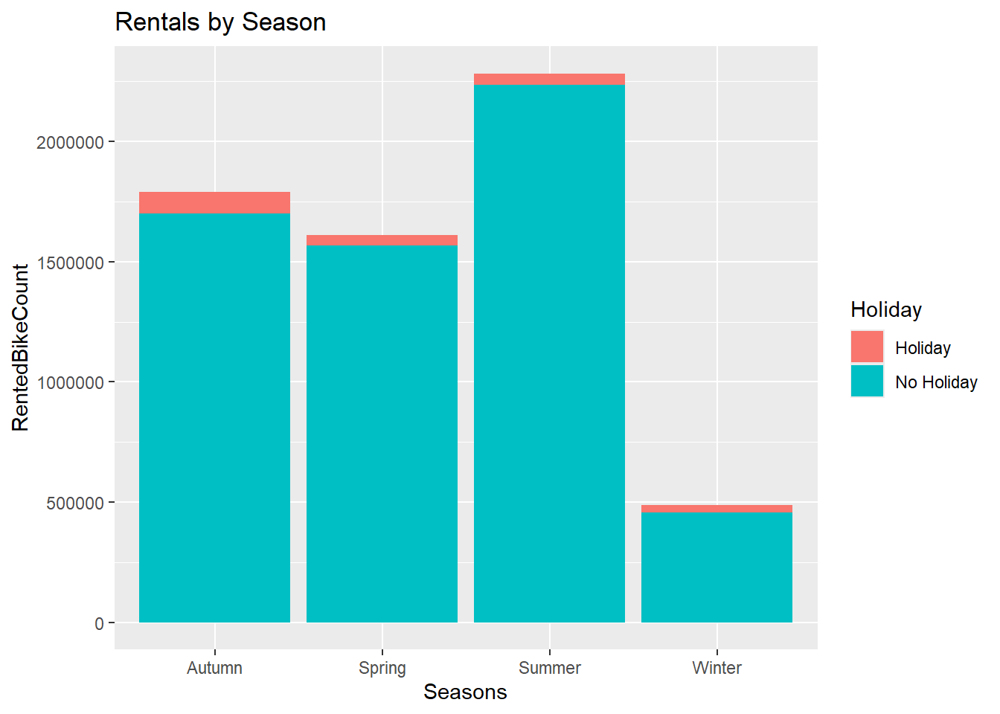
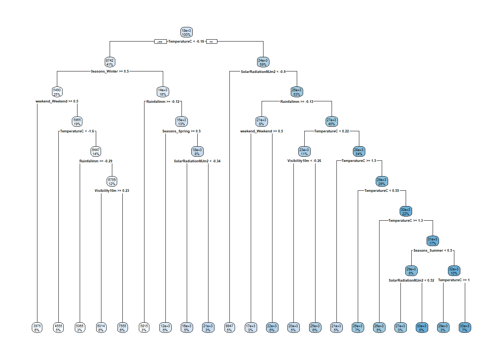
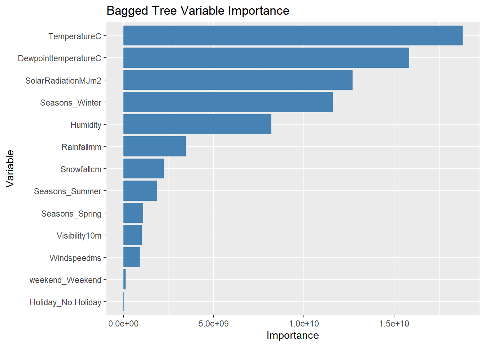
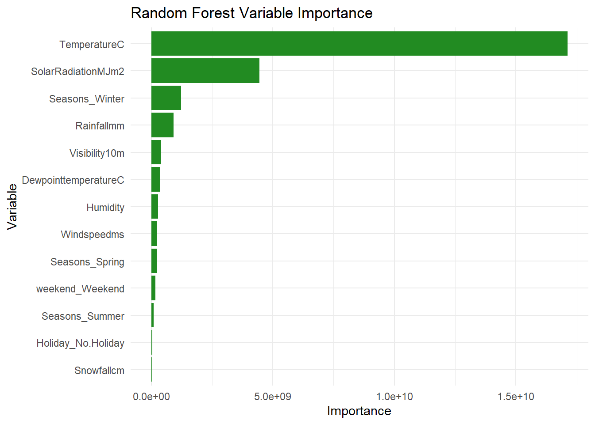

library(tidyverse)
library(tidymodels)
library(rpart.plot)
library(baguette)
library(ranger)HW10 Group
Reading in some tools!
Reading Data and EDA
This dataset keeps track of rented bikes / hour in Seoul, as well as a collection of climate and business metrics.
By default, make.names() replaces weird characters (degrees, ^2, etc.) with periods, so the second line just removes those periods.
bike <- read_csv("https://www4.stat.ncsu.edu/~online/datasets/SeoulBikeData.csv",
locale = locale(encoding = "latin1"))Rows: 8760 Columns: 14
── Column specification ────────────────────────────────────────────────────────
Delimiter: ","
chr (4): Date, Seasons, Holiday, Functioning Day
dbl (10): Rented Bike Count, Hour, Temperature(°C), Humidity(%), Wind speed ...
ℹ Use `spec()` to retrieve the full column specification for this data.
ℹ Specify the column types or set `show_col_types = FALSE` to quiet this message.## By default, make.names() replaces weird characters (degrees, ^2, etc.)
## with periods, so this line just removes those periods
colnames(bike) <- gsub("\\.", "", make.names(colnames(bike)))
bike <- bike|>
mutate(
Date = dmy(Date),
Seasons = as.factor(Seasons),
Holiday = as.factor(Holiday),
FunctioningDay = as.factor(FunctioningDay)
)summary(bike) Date RentedBikeCount Hour TemperatureC
Min. :2017-12-01 Min. : 0.0 Min. : 0.00 Min. :-17.80
1st Qu.:2018-03-02 1st Qu.: 191.0 1st Qu.: 5.75 1st Qu.: 3.50
Median :2018-06-01 Median : 504.5 Median :11.50 Median : 13.70
Mean :2018-06-01 Mean : 704.6 Mean :11.50 Mean : 12.88
3rd Qu.:2018-08-31 3rd Qu.:1065.2 3rd Qu.:17.25 3rd Qu.: 22.50
Max. :2018-11-30 Max. :3556.0 Max. :23.00 Max. : 39.40
Humidity Windspeedms Visibility10m DewpointtemperatureC
Min. : 0.00 Min. :0.000 Min. : 27 Min. :-30.600
1st Qu.:42.00 1st Qu.:0.900 1st Qu.: 940 1st Qu.: -4.700
Median :57.00 Median :1.500 Median :1698 Median : 5.100
Mean :58.23 Mean :1.725 Mean :1437 Mean : 4.074
3rd Qu.:74.00 3rd Qu.:2.300 3rd Qu.:2000 3rd Qu.: 14.800
Max. :98.00 Max. :7.400 Max. :2000 Max. : 27.200
SolarRadiationMJm2 Rainfallmm Snowfallcm Seasons
Min. :0.0000 Min. : 0.0000 Min. :0.00000 Autumn:2184
1st Qu.:0.0000 1st Qu.: 0.0000 1st Qu.:0.00000 Spring:2208
Median :0.0100 Median : 0.0000 Median :0.00000 Summer:2208
Mean :0.5691 Mean : 0.1487 Mean :0.07507 Winter:2160
3rd Qu.:0.9300 3rd Qu.: 0.0000 3rd Qu.:0.00000
Max. :3.5200 Max. :35.0000 Max. :8.80000
Holiday FunctioningDay
Holiday : 432 No : 295
No Holiday:8328 Yes:8465
bike |>
summarize(across(everything(), ~sum(is.na(.)))) |>
pivot_longer(everything())# A tibble: 14 × 2
name value
<chr> <int>
1 Date 0
2 RentedBikeCount 0
3 Hour 0
4 TemperatureC 0
5 Humidity 0
6 Windspeedms 0
7 Visibility10m 0
8 DewpointtemperatureC 0
9 SolarRadiationMJm2 0
10 Rainfallmm 0
11 Snowfallcm 0
12 Seasons 0
13 Holiday 0
14 FunctioningDay 0No N/A values? How nice :) And no values of -200 or anything like that either.
Create summary statistics of numerical variables across categorical variables.
mysummary <- function(data, variable){
summary <- data |>
group_by(get(variable)) |>
summarize(n = n(),
across(where(is.numeric),
list("mean" = mean, "median" = median, "sd" = sd, "IQR" = IQR),
.names = "{.fn}_{.col}"))
colnames(summary)[1] <- variable
return(summary)
}
mysummary(bike, "Seasons")# A tibble: 4 × 46
Seasons n mean_RentedBikeCount median_RentedBikeCount sd_RentedBikeCount
<fct> <int> <dbl> <dbl> <dbl>
1 Autumn 2184 820. 764. 651.
2 Spring 2208 730. 583 622.
3 Summer 2208 1034. 906. 690.
4 Winter 2160 226. 203 150.
# ℹ 41 more variables: IQR_RentedBikeCount <dbl>, mean_Hour <dbl>,
# median_Hour <dbl>, sd_Hour <dbl>, IQR_Hour <dbl>, mean_TemperatureC <dbl>,
# median_TemperatureC <dbl>, sd_TemperatureC <dbl>, IQR_TemperatureC <dbl>,
# mean_Humidity <dbl>, median_Humidity <dbl>, sd_Humidity <dbl>,
# IQR_Humidity <dbl>, mean_Windspeedms <dbl>, median_Windspeedms <dbl>,
# sd_Windspeedms <dbl>, IQR_Windspeedms <dbl>, mean_Visibility10m <dbl>,
# median_Visibility10m <dbl>, sd_Visibility10m <dbl>, …mysummary(bike, "Holiday")# A tibble: 2 × 46
Holiday n mean_RentedBikeCount median_RentedBikeCount sd_RentedBikeCount
<fct> <int> <dbl> <dbl> <dbl>
1 Holiday 432 500. 240 571.
2 No Holid… 8328 715. 524. 647.
# ℹ 41 more variables: IQR_RentedBikeCount <dbl>, mean_Hour <dbl>,
# median_Hour <dbl>, sd_Hour <dbl>, IQR_Hour <dbl>, mean_TemperatureC <dbl>,
# median_TemperatureC <dbl>, sd_TemperatureC <dbl>, IQR_TemperatureC <dbl>,
# mean_Humidity <dbl>, median_Humidity <dbl>, sd_Humidity <dbl>,
# IQR_Humidity <dbl>, mean_Windspeedms <dbl>, median_Windspeedms <dbl>,
# sd_Windspeedms <dbl>, IQR_Windspeedms <dbl>, mean_Visibility10m <dbl>,
# median_Visibility10m <dbl>, sd_Visibility10m <dbl>, …mysummary(bike, "FunctioningDay")# A tibble: 2 × 46
FunctioningDay n mean_RentedBikeCount median_RentedBikeCount
<fct> <int> <dbl> <dbl>
1 No 295 0 0
2 Yes 8465 729. 542
# ℹ 42 more variables: sd_RentedBikeCount <dbl>, IQR_RentedBikeCount <dbl>,
# mean_Hour <dbl>, median_Hour <dbl>, sd_Hour <dbl>, IQR_Hour <dbl>,
# mean_TemperatureC <dbl>, median_TemperatureC <dbl>, sd_TemperatureC <dbl>,
# IQR_TemperatureC <dbl>, mean_Humidity <dbl>, median_Humidity <dbl>,
# sd_Humidity <dbl>, IQR_Humidity <dbl>, mean_Windspeedms <dbl>,
# median_Windspeedms <dbl>, sd_Windspeedms <dbl>, IQR_Windspeedms <dbl>,
# mean_Visibility10m <dbl>, median_Visibility10m <dbl>, …When FunctioningDay is “No”, RentedBikeCount is 0. Based on that, we will subset the data to exclude the non-functioning days.
#filter to functioning days
bike <- bike |>
filter(FunctioningDay == "Yes")
#re-run the numerical summaries
mysummary(bike, "Seasons")# A tibble: 4 × 46
Seasons n mean_RentedBikeCount median_RentedBikeCount sd_RentedBikeCount
<fct> <int> <dbl> <dbl> <dbl>
1 Autumn 1937 924. 856 618.
2 Spring 2160 746. 599 619.
3 Summer 2208 1034. 906. 690.
4 Winter 2160 226. 203 150.
# ℹ 41 more variables: IQR_RentedBikeCount <dbl>, mean_Hour <dbl>,
# median_Hour <dbl>, sd_Hour <dbl>, IQR_Hour <dbl>, mean_TemperatureC <dbl>,
# median_TemperatureC <dbl>, sd_TemperatureC <dbl>, IQR_TemperatureC <dbl>,
# mean_Humidity <dbl>, median_Humidity <dbl>, sd_Humidity <dbl>,
# IQR_Humidity <dbl>, mean_Windspeedms <dbl>, median_Windspeedms <dbl>,
# sd_Windspeedms <dbl>, IQR_Windspeedms <dbl>, mean_Visibility10m <dbl>,
# median_Visibility10m <dbl>, sd_Visibility10m <dbl>, …mysummary(bike, "Holiday")# A tibble: 2 × 46
Holiday n mean_RentedBikeCount median_RentedBikeCount sd_RentedBikeCount
<fct> <int> <dbl> <dbl> <dbl>
1 Holiday 408 529. 259 574.
2 No Holid… 8057 739. 561 644.
# ℹ 41 more variables: IQR_RentedBikeCount <dbl>, mean_Hour <dbl>,
# median_Hour <dbl>, sd_Hour <dbl>, IQR_Hour <dbl>, mean_TemperatureC <dbl>,
# median_TemperatureC <dbl>, sd_TemperatureC <dbl>, IQR_TemperatureC <dbl>,
# mean_Humidity <dbl>, median_Humidity <dbl>, sd_Humidity <dbl>,
# IQR_Humidity <dbl>, mean_Windspeedms <dbl>, median_Windspeedms <dbl>,
# sd_Windspeedms <dbl>, IQR_Windspeedms <dbl>, mean_Visibility10m <dbl>,
# median_Visibility10m <dbl>, sd_Visibility10m <dbl>, …mysummary(bike, "FunctioningDay")# A tibble: 1 × 46
FunctioningDay n mean_RentedBikeCount median_RentedBikeCount
<fct> <int> <dbl> <dbl>
1 Yes 8465 729. 542
# ℹ 42 more variables: sd_RentedBikeCount <dbl>, IQR_RentedBikeCount <dbl>,
# mean_Hour <dbl>, median_Hour <dbl>, sd_Hour <dbl>, IQR_Hour <dbl>,
# mean_TemperatureC <dbl>, median_TemperatureC <dbl>, sd_TemperatureC <dbl>,
# IQR_TemperatureC <dbl>, mean_Humidity <dbl>, median_Humidity <dbl>,
# sd_Humidity <dbl>, IQR_Humidity <dbl>, mean_Windspeedms <dbl>,
# median_Windspeedms <dbl>, sd_Windspeedms <dbl>, IQR_Windspeedms <dbl>,
# mean_Visibility10m <dbl>, median_Visibility10m <dbl>, …Based on the summaries, it looks like our data is pretty evenly spread throughout the year - ~2000 measurements a season.
Grouping the data by date - Step 7
bike_daily <- bike |>
group_by(Date, Seasons, Holiday)|>
summarize(across(c(RentedBikeCount, Rainfallmm, Snowfallcm), sum),
across(c(TemperatureC:SolarRadiationMJm2), mean)) `summarise()` has regrouped the output.
ℹ Summaries were computed grouped by Date, Seasons, and Holiday.
ℹ Output is grouped by Date and Seasons.
ℹ Use `summarise(.groups = "drop_last")` to silence this message.
ℹ Use `summarise(.by = c(Date, Seasons, Holiday))` for per-operation grouping
(`?dplyr::dplyr_by`) instead.Recreate basic summary stats.
summary(bike_daily) Date Seasons Holiday RentedBikeCount
Min. :2017-12-01 Autumn:81 Holiday : 17 Min. : 977
1st Qu.:2018-02-27 Spring:90 No Holiday:336 1st Qu.: 6967
Median :2018-05-28 Summer:92 Median :18563
Mean :2018-05-28 Winter:90 Mean :17485
3rd Qu.:2018-08-24 3rd Qu.:26285
Max. :2018-11-30 Max. :36149
Rainfallmm Snowfallcm TemperatureC Humidity
Min. : 0.000 Min. : 0.000 Min. :-14.738 Min. :22.25
1st Qu.: 0.000 1st Qu.: 0.000 1st Qu.: 3.304 1st Qu.:47.58
Median : 0.000 Median : 0.000 Median : 13.738 Median :57.17
Mean : 3.576 Mean : 1.863 Mean : 12.776 Mean :58.17
3rd Qu.: 0.500 3rd Qu.: 0.000 3rd Qu.: 22.592 3rd Qu.:67.71
Max. :95.500 Max. :78.700 Max. : 33.742 Max. :95.88
Windspeedms Visibility10m DewpointtemperatureC SolarRadiationMJm2
Min. :0.6625 Min. : 214.3 Min. :-27.750 Min. :0.02917
1st Qu.:1.3042 1st Qu.:1087.0 1st Qu.: -5.188 1st Qu.:0.28333
Median :1.6583 Median :1557.8 Median : 4.612 Median :0.56500
Mean :1.7261 Mean :1434.0 Mean : 3.954 Mean :0.56773
3rd Qu.:1.9542 3rd Qu.:1874.3 3rd Qu.: 14.921 3rd Qu.:0.82000
Max. :4.0000 Max. :2000.0 Max. : 25.038 Max. :1.21667 mysummary(bike_daily, "Seasons")# A tibble: 4 × 42
Seasons n mean_RentedBikeCount median_RentedBikeCount sd_RentedBikeCount
<fct> <int> <dbl> <dbl> <dbl>
1 Autumn 81 22099. 23350 6711.
2 Spring 90 17910. 17590 8357.
3 Summer 92 24818. 25572. 7297.
4 Winter 90 5413. 5498 1808.
# ℹ 37 more variables: IQR_RentedBikeCount <dbl>, mean_Rainfallmm <dbl>,
# median_Rainfallmm <dbl>, sd_Rainfallmm <dbl>, IQR_Rainfallmm <dbl>,
# mean_Snowfallcm <dbl>, median_Snowfallcm <dbl>, sd_Snowfallcm <dbl>,
# IQR_Snowfallcm <dbl>, mean_TemperatureC <dbl>, median_TemperatureC <dbl>,
# sd_TemperatureC <dbl>, IQR_TemperatureC <dbl>, mean_Humidity <dbl>,
# median_Humidity <dbl>, sd_Humidity <dbl>, IQR_Humidity <dbl>,
# mean_Windspeedms <dbl>, median_Windspeedms <dbl>, sd_Windspeedms <dbl>, …mysummary(bike_daily, "Holiday")# A tibble: 2 × 42
Holiday n mean_RentedBikeCount median_RentedBikeCount sd_RentedBikeCount
<fct> <int> <dbl> <dbl> <dbl>
1 Holiday 17 12700. 7184 10504.
2 No Holid… 336 17727. 19104. 9862.
# ℹ 37 more variables: IQR_RentedBikeCount <dbl>, mean_Rainfallmm <dbl>,
# median_Rainfallmm <dbl>, sd_Rainfallmm <dbl>, IQR_Rainfallmm <dbl>,
# mean_Snowfallcm <dbl>, median_Snowfallcm <dbl>, sd_Snowfallcm <dbl>,
# IQR_Snowfallcm <dbl>, mean_TemperatureC <dbl>, median_TemperatureC <dbl>,
# sd_TemperatureC <dbl>, IQR_TemperatureC <dbl>, mean_Humidity <dbl>,
# median_Humidity <dbl>, sd_Humidity <dbl>, IQR_Humidity <dbl>,
# mean_Windspeedms <dbl>, median_Windspeedms <dbl>, sd_Windspeedms <dbl>, …create some plots to explore relationships.
The plot below looks at bike rental counts and temperatures across dates.
ggplot(bike_daily, aes(x = Date, y = RentedBikeCount, color = TemperatureC))+
geom_point()+
labs(title = "Rentals by date")
The plots below look at bike rental counts across seasons and whether it is a holiday.
ggplot(bike_daily, aes(x = Seasons, y = RentedBikeCount, fill = Holiday)) +
geom_col() +
labs(title = "Rentals by Season")
ggplot(bike_daily, aes(x = Seasons, y = RentedBikeCount, fill = Holiday)) +
geom_boxplot() +
labs(title = "Rentals by Season")
The plot below looks at the relationship between bike rentals and rainfall.
ggplot(bike_daily, aes(x = Rainfallmm, y = RentedBikeCount, color = Seasons)) +
geom_point() +
geom_smooth(method = lm) +
labs(title = "Rentals by Rainfall")`geom_smooth()` using formula = 'y ~ x'
All of the above plots support the idea that bike rentals are higher during the warmer seasons. Bike rentals also seem to be lower on holidays and lower when it is raining.
We can quantify some of these patterns further by reporting correlation statistics.
bike_daily |>
group_by(c()) |>
summarize(across(where(is.numeric),
list("correlation" = ~ cor(.x, RentedBikeCount)),
.names = "cor_{.col}")) |>
pivot_longer(starts_with("cor_"))# A tibble: 9 × 2
name value
<chr> <dbl>
1 cor_RentedBikeCount 1
2 cor_Rainfallmm -0.239
3 cor_Snowfallcm -0.265
4 cor_TemperatureC 0.753
5 cor_Humidity 0.0359
6 cor_Windspeedms -0.193
7 cor_Visibility10m 0.166
8 cor_DewpointtemperatureC 0.650
9 cor_SolarRadiationMJm2 0.736 Split the Data
Split the data into a training and testing set (75/25 split), stratified by Seasons. On the training set, create a 10-fold CV split.
set.seed(10)
bike_split <- rsample::initial_split(bike_daily, prop = 0.75, strata = Seasons)
training <- training(bike_split)
testing <- testing(bike_split)
#view training set
training# A tibble: 263 × 12
# Groups: Date, Seasons [263]
Date Seasons Holiday RentedBikeCount Rainfallmm Snowfallcm TemperatureC
<date> <fct> <fct> <dbl> <dbl> <dbl> <dbl>
1 2018-09-02 Autumn No Hol… 26881 0 0 25.0
2 2018-09-03 Autumn No Hol… 10802 34.5 0 23.6
3 2018-09-04 Autumn No Hol… 29529 0 0 23.3
4 2018-09-07 Autumn No Hol… 30381 1.5 0 22.2
5 2018-09-08 Autumn No Hol… 29813 0 0 21.7
6 2018-09-09 Autumn No Hol… 28354 0 0 22.0
7 2018-09-11 Autumn No Hol… 31694 0 0 21.6
8 2018-09-13 Autumn No Hol… 30991 0 0 23.4
9 2018-09-14 Autumn No Hol… 28199 0.5 0 23.5
10 2018-09-15 Autumn No Hol… 25079 0.2 0 23.2
# ℹ 253 more rows
# ℹ 5 more variables: Humidity <dbl>, Windspeedms <dbl>, Visibility10m <dbl>,
# DewpointtemperatureC <dbl>, SolarRadiationMJm2 <dbl>#view testing set
testing# A tibble: 90 × 12
# Groups: Date, Seasons [90]
Date Seasons Holiday RentedBikeCount Rainfallmm Snowfallcm TemperatureC
<date> <fct> <fct> <dbl> <dbl> <dbl> <dbl>
1 2017-12-02 Winter No Hol… 8523 0 0 1.32
2 2017-12-03 Winter No Hol… 7222 4 0 4.88
3 2017-12-17 Winter No Hol… 3776 0 0 -7.01
4 2017-12-20 Winter No Hol… 4568 0.2 48.3 -4.29
5 2017-12-21 Winter No Hol… 5734 0 38.9 -0.846
6 2017-12-26 Winter No Hol… 5605 0 0 -3.27
7 2017-12-27 Winter No Hol… 5351 0 0 -7.00
8 2018-01-06 Winter No Hol… 5180 0 0 -2.75
9 2018-01-09 Winter No Hol… 5500 0 10.8 -3.87
10 2018-01-14 Winter No Hol… 4225 0 0 0.0208
# ℹ 80 more rows
# ℹ 5 more variables: Humidity <dbl>, Windspeedms <dbl>, Visibility10m <dbl>,
# DewpointtemperatureC <dbl>, SolarRadiationMJm2 <dbl>#create folds for cross-validation split
bike_CV_folds <- vfold_cv(training, 10, strata = Seasons)Fitting MLR Models
Recipe 1
- Ignore the date variable for modeling but use it to create a weekday/weekend (factor) variable
- Standardize the numeric variables
- Create dummy variables for the seasons, holiday, and our new day type variable
MLR_recipe1 <- recipe(RentedBikeCount ~ ., data = training) |>
update_role(Date, new_role = "ID") |>
step_date(Date, features = "dow") |>
step_mutate(weekend = factor(if_else(Date_dow %in% c("Sat", "Sun"), "Weekend", "Weekday"))) |>
step_select(-Date_dow) |>
step_normalize(all_numeric_predictors()) |>
step_dummy(all_nominal_predictors())Warning: `step_select()` was deprecated in recipes 1.3.0.
ℹ See `?step_select()` for recommended alternatives.#view summary of recipe
summary(MLR_recipe1)# A tibble: 12 × 4
variable type role source
<chr> <list> <chr> <chr>
1 Date <chr [1]> ID original
2 Seasons <chr [3]> predictor original
3 Holiday <chr [3]> predictor original
4 Rainfallmm <chr [2]> predictor original
5 Snowfallcm <chr [2]> predictor original
6 TemperatureC <chr [2]> predictor original
7 Humidity <chr [2]> predictor original
8 Windspeedms <chr [2]> predictor original
9 Visibility10m <chr [2]> predictor original
10 DewpointtemperatureC <chr [2]> predictor original
11 SolarRadiationMJm2 <chr [2]> predictor original
12 RentedBikeCount <chr [2]> outcome original#view columns
MLR_recipe1 |>
prep(training) |>
bake(training) |>
colnames() [1] "Date" "Rainfallmm" "Snowfallcm"
[4] "TemperatureC" "Humidity" "Windspeedms"
[7] "Visibility10m" "DewpointtemperatureC" "SolarRadiationMJm2"
[10] "RentedBikeCount" "Seasons_Spring" "Seasons_Summer"
[13] "Seasons_Winter" "Holiday_No.Holiday" "weekend_Weekend" Recipe 2
- Add in interactions between seasons and holiday, seasons and temp, temp and rainfall
MLR_recipe2 <- recipe(RentedBikeCount ~ ., data = training) |>
update_role(Date, new_role = "ID") |>
step_date(Date, features = "dow") |>
step_mutate(weekend = factor(if_else(Date_dow %in% c("Sat", "Sun"), "Weekend", "Weekday"))) |>
step_select(-Date_dow) |>
step_normalize(all_numeric_predictors()) |>
step_dummy(all_nominal_predictors()) |>
step_interact(~ starts_with("Seasons"):starts_with("Holiday") +
starts_with("Seasons"):TemperatureC +
TemperatureC:Rainfallmm)
#view summary of recipe
summary(MLR_recipe2)# A tibble: 12 × 4
variable type role source
<chr> <list> <chr> <chr>
1 Date <chr [1]> ID original
2 Seasons <chr [3]> predictor original
3 Holiday <chr [3]> predictor original
4 Rainfallmm <chr [2]> predictor original
5 Snowfallcm <chr [2]> predictor original
6 TemperatureC <chr [2]> predictor original
7 Humidity <chr [2]> predictor original
8 Windspeedms <chr [2]> predictor original
9 Visibility10m <chr [2]> predictor original
10 DewpointtemperatureC <chr [2]> predictor original
11 SolarRadiationMJm2 <chr [2]> predictor original
12 RentedBikeCount <chr [2]> outcome original#view columns
MLR_recipe2 |>
prep(training) |>
bake(training) |>
colnames() [1] "Date" "Rainfallmm"
[3] "Snowfallcm" "TemperatureC"
[5] "Humidity" "Windspeedms"
[7] "Visibility10m" "DewpointtemperatureC"
[9] "SolarRadiationMJm2" "RentedBikeCount"
[11] "Seasons_Spring" "Seasons_Summer"
[13] "Seasons_Winter" "Holiday_No.Holiday"
[15] "weekend_Weekend" "Seasons_Spring_x_Holiday_No.Holiday"
[17] "Seasons_Summer_x_Holiday_No.Holiday" "Seasons_Winter_x_Holiday_No.Holiday"
[19] "Seasons_Spring_x_TemperatureC" "Seasons_Summer_x_TemperatureC"
[21] "Seasons_Winter_x_TemperatureC" "TemperatureC_x_Rainfallmm" Recipe 3
- Add in quadratic terms for the standardized temp and humidity variables
MLR_recipe3 <- recipe(RentedBikeCount ~ ., data = training) |>
update_role(Date, new_role = "ID") |>
step_date(Date, features = "dow") |>
step_mutate(weekend = factor(if_else(Date_dow %in% c("Sat", "Sun"), "Weekend", "Weekday"))) |>
step_select(-Date_dow) |>
step_normalize(all_numeric_predictors()) |>
step_dummy(all_nominal_predictors()) |>
step_interact(~ starts_with("Seasons"):starts_with("Holiday") +
starts_with("Seasons"):TemperatureC +
TemperatureC:Rainfallmm) |>
step_mutate(TemperatureC_2 = TemperatureC^2,
Humidity_2 = Humidity^2)
#view summary of recipe
summary(MLR_recipe3)# A tibble: 12 × 4
variable type role source
<chr> <list> <chr> <chr>
1 Date <chr [1]> ID original
2 Seasons <chr [3]> predictor original
3 Holiday <chr [3]> predictor original
4 Rainfallmm <chr [2]> predictor original
5 Snowfallcm <chr [2]> predictor original
6 TemperatureC <chr [2]> predictor original
7 Humidity <chr [2]> predictor original
8 Windspeedms <chr [2]> predictor original
9 Visibility10m <chr [2]> predictor original
10 DewpointtemperatureC <chr [2]> predictor original
11 SolarRadiationMJm2 <chr [2]> predictor original
12 RentedBikeCount <chr [2]> outcome original#view columns
MLR_recipe3 |>
prep(training) |>
bake(training) |>
colnames() [1] "Date" "Rainfallmm"
[3] "Snowfallcm" "TemperatureC"
[5] "Humidity" "Windspeedms"
[7] "Visibility10m" "DewpointtemperatureC"
[9] "SolarRadiationMJm2" "RentedBikeCount"
[11] "Seasons_Spring" "Seasons_Summer"
[13] "Seasons_Winter" "Holiday_No.Holiday"
[15] "weekend_Weekend" "Seasons_Spring_x_Holiday_No.Holiday"
[17] "Seasons_Summer_x_Holiday_No.Holiday" "Seasons_Winter_x_Holiday_No.Holiday"
[19] "Seasons_Spring_x_TemperatureC" "Seasons_Summer_x_TemperatureC"
[21] "Seasons_Winter_x_TemperatureC" "TemperatureC_x_Rainfallmm"
[23] "TemperatureC_2" "Humidity_2" Compare MLR Models
Set up linear models to use the “lm” engine.
MLR_spec <- linear_reg() |>
set_engine("lm")Create workflows.
MLR_wkf1 <- workflow() |>
add_recipe(MLR_recipe1) |>
add_model(MLR_spec)
MLR_wkf2 <- workflow() |>
add_recipe(MLR_recipe2) |>
add_model(MLR_spec)
MLR_wkf3 <- workflow() |>
add_recipe(MLR_recipe3) |>
add_model(MLR_spec)Fit the models using 10 fold CV and consider the training set CV error to choose a best model.
MLR_fit1 <- MLR_wkf1 |>
fit_resamples(bike_CV_folds)
MLR_fit2 <- MLR_wkf2 |>
fit_resamples(bike_CV_folds)
MLR_fit3 <- MLR_wkf3 |>
fit_resamples(bike_CV_folds)Collect metrics.
rbind(MLR_fit1 |> collect_metrics() |> filter(.metric == "rmse"),
MLR_fit2 |> collect_metrics() |> filter(.metric == "rmse"),
MLR_fit3 |> collect_metrics() |> filter(.metric == "rmse")) |>
mutate(Model = c("Model 1", "Model 2", "Model 3")) |>
select(Model, mean, n, std_err)# A tibble: 3 × 4
Model mean n std_err
<chr> <dbl> <int> <dbl>
1 Model 1 4356. 10 148.
2 Model 2 3085. 10 340.
3 Model 3 3056. 10 340.The best model based on the cross-validation RMSE metrics is Model 3.
Fit the model to the entire training data set.
MLR_final_fit <- MLR_wkf3 |>
last_fit(bike_split)
MLR_final_fit |> collect_metrics()# A tibble: 2 × 4
.metric .estimator .estimate .config
<chr> <chr> <dbl> <chr>
1 rmse standard 3133. pre0_mod0_post0
2 rsq standard 0.908 pre0_mod0_post0Fitting Other Models
Using the first recipe from the MLR section, fit other types of models:
In general, this will follow these steps: Recipe > Model > Workflow > Fit & Tune Tree > Select best model > Fit to entire training set
Regression Tree
## Define Model
reg_tree_mod <- decision_tree(tree_depth = tune(),
min_n = 20,
cost_complexity = tune())|>
set_engine("rpart")|>
set_mode("regression")
## Add model & recipe to workflow
reg_tree_wkf <- workflow()|>
add_recipe(MLR_recipe1)|>
add_model(reg_tree_mod)
reg_tree_grid <- grid_regular(cost_complexity(),
tree_depth(),
levels = c(10, 5))
## Fit & tune tree
reg_tree_fits <- reg_tree_wkf |>
tune_grid(resamples = bike_CV_folds,
grid = reg_tree_grid)## Select best model
reg_tree_best <- select_best(reg_tree_fits, metric = "rmse")
cat("=== Best Regression Tree Parameters ===")
reg_tree_best=== Best Regression Tree Parameters ===# A tibble: 1 × 3
cost_complexity tree_depth .config
<dbl> <int> <chr>
1 0.0000000001 11 pre0_mod04_post0Now, fit to entire training set
reg_tree_final_wkf <- reg_tree_wkf |>
finalize_workflow(reg_tree_best)
reg_tree_final_fit <- reg_tree_final_wkf |>
last_fit(bike_split)
reg_tree_final_fit |> collect_metrics()# A tibble: 2 × 4
.metric .estimator .estimate .config
<chr> <chr> <dbl> <chr>
1 rmse standard 3362. pre0_mod0_post0
2 rsq standard 0.886 pre0_mod0_post0reg_tree_final_model <- extract_workflow(reg_tree_final_fit) Bagged Tree
## Define Model
bag_tree_mod <- bag_tree(min_n = 20,
cost_complexity = tune())|>
set_engine("rpart")|>
set_mode("regression")
## Add model & recipe to workflow
bag_tree_wkf <- workflow()|>
add_recipe(MLR_recipe1)|>
add_model(bag_tree_mod)
bag_tree_grid <- grid_regular(cost_complexity(),
levels = 15)
## Fit & tune tree
bag_tree_fits <- bag_tree_wkf |>
tune_grid(resamples = bike_CV_folds,
grid = bag_tree_grid)Registered S3 method overwritten by 'butcher':
method from
as.character.dev_topic generics→ A | warning: There was 1 warning in `dplyr::mutate()`.
ℹ In argument: `model = iter(...)`.
Caused by warning:
! package 'future' was built under R version 4.5.3There were issues with some computations A: x1
There were issues with some computations A: x1## Select best model
bag_tree_best <- select_best(bag_tree_fits, metric = "rmse")
cat("=== Best Bagged Tree Parameters ===")
bag_tree_best=== Best Bagged Tree Parameters ===# A tibble: 1 × 2
cost_complexity .config
<dbl> <chr>
1 0.000000164 pre0_mod06_post0Now, fit to entire training set
bag_tree_final_wkf <- bag_tree_wkf |>
finalize_workflow(bag_tree_best)
bag_tree_final_fit <- bag_tree_final_wkf |>
last_fit(bike_split)
bag_tree_final_fit |> collect_metrics()# A tibble: 2 × 4
.metric .estimator .estimate .config
<chr> <chr> <dbl> <chr>
1 rmse standard 2943. pre0_mod0_post0
2 rsq standard 0.913 pre0_mod0_post0bag_tree_final_model <- extract_workflow(bag_tree_final_fit) Random Forest
## Define Model
rand_forest_mod <- rand_forest(mtry = tune()) |>
set_engine("ranger", importance = "impurity") |>
set_mode("regression")
## Add model & recipe to workflow
rand_forest_wkf <- workflow()|>
add_recipe(MLR_recipe1)|>
add_model(rand_forest_mod)
## Fit & tune tree
rand_forest_fits <- rand_forest_wkf |>
tune_grid(resamples = bike_CV_folds,
grid = 10)i Creating pre-processing data to finalize 1 unknown parameter: "mtry"collect_metrics(rand_forest_fits)# A tibble: 20 × 7
mtry .metric .estimator mean n std_err .config
<int> <chr> <chr> <dbl> <int> <dbl> <chr>
1 1 rmse standard 4882. 10 256. pre0_mod01_post0
2 1 rsq standard 0.831 10 0.0183 pre0_mod01_post0
3 2 rmse standard 3511. 10 186. pre0_mod02_post0
4 2 rsq standard 0.887 10 0.0155 pre0_mod02_post0
5 3 rmse standard 3179. 10 184. pre0_mod03_post0
6 3 rsq standard 0.902 10 0.0153 pre0_mod03_post0
7 4 rmse standard 3051. 10 192. pre0_mod04_post0
8 4 rsq standard 0.906 10 0.0156 pre0_mod04_post0
9 6 rmse standard 2959. 10 187. pre0_mod05_post0
10 6 rsq standard 0.911 10 0.0153 pre0_mod05_post0
11 7 rmse standard 2925. 10 181. pre0_mod06_post0
12 7 rsq standard 0.913 10 0.0143 pre0_mod06_post0
13 8 rmse standard 2903. 10 186. pre0_mod07_post0
14 8 rsq standard 0.913 10 0.0148 pre0_mod07_post0
15 10 rmse standard 2858. 10 178. pre0_mod08_post0
16 10 rsq standard 0.916 10 0.0137 pre0_mod08_post0
17 11 rmse standard 2873. 10 178. pre0_mod09_post0
18 11 rsq standard 0.915 10 0.0137 pre0_mod09_post0
19 13 rmse standard 2851. 10 178. pre0_mod10_post0
20 13 rsq standard 0.916 10 0.0139 pre0_mod10_post0## Select best model
rand_forest_best <- select_best(rand_forest_fits, metric = "rmse")
cat("=== Best Random Forest Parameters ===")
rand_forest_best=== Best Random Forest Parameters ===# A tibble: 1 × 2
mtry .config
<int> <chr>
1 13 pre0_mod10_post0Now, fit to entire training set
rand_forest_final_wkf <- rand_forest_wkf |>
finalize_workflow(rand_forest_best)
rand_forest_final_fit <- rand_forest_final_wkf |>
last_fit(bike_split)
rand_forest_final_fit |> collect_metrics()# A tibble: 2 × 4
.metric .estimator .estimate .config
<chr> <chr> <dbl> <chr>
1 rmse standard 2825. pre0_mod0_post0
2 rsq standard 0.920 pre0_mod0_post0rand_forest_final_model <- extract_workflow(rand_forest_final_fit) Compare on the test sets
First, the best models from each family of models are used to predict test data set values
# MLR model predictions
# Regression Tree model predictions
# Bagged tree model predictions
# Random forest model predictions
mlr_preds <- collect_predictions(MLR_final_fit)
reg_preds <- collect_predictions(reg_tree_final_fit)
bag_preds <- collect_predictions(bag_tree_final_fit)
rf_preds <- collect_predictions(rand_forest_final_fit)Now that we’ve use each model to predict on the test set values, here is a summary report for each model.
# MLR final model fit
MLR_final_fit <- MLR_wkf3 |>
last_fit(bike_split)
collect_metrics(MLR_final_fit)# A tibble: 2 × 4
.metric .estimator .estimate .config
<chr> <chr> <dbl> <chr>
1 rmse standard 3133. pre0_mod0_post0
2 rsq standard 0.908 pre0_mod0_post0# regression tree final model fit
reg_tree_final_fit <- reg_tree_final_wkf |>
last_fit(bike_split)
collect_metrics(reg_tree_final_fit)# A tibble: 2 × 4
.metric .estimator .estimate .config
<chr> <chr> <dbl> <chr>
1 rmse standard 3362. pre0_mod0_post0
2 rsq standard 0.886 pre0_mod0_post0# bagged tree final model fit
bag_tree_final_fit <- bag_tree_final_wkf |>
last_fit(bike_split)
collect_metrics(bag_tree_final_fit)# A tibble: 2 × 4
.metric .estimator .estimate .config
<chr> <chr> <dbl> <chr>
1 rmse standard 3121. pre0_mod0_post0
2 rsq standard 0.903 pre0_mod0_post0# random forest final model fit
rand_forest_final_fit <- rand_forest_final_wkf |>
last_fit(bike_split)
collect_metrics(rand_forest_final_fit)# A tibble: 2 × 4
.metric .estimator .estimate .config
<chr> <chr> <dbl> <chr>
1 rmse standard 2865. pre0_mod0_post0
2 rsq standard 0.918 pre0_mod0_post0bind_rows(
collect_metrics(MLR_final_fit) |> mutate(Model = "MLR"),
collect_metrics(reg_tree_final_fit) |> mutate(Model = "Regression Tree"),
collect_metrics(bag_tree_final_fit) |> mutate(Model = "Bagged Tree"),
collect_metrics(rand_forest_final_fit) |> mutate(Model = "Random Forest")
)# A tibble: 8 × 5
.metric .estimator .estimate .config Model
<chr> <chr> <dbl> <chr> <chr>
1 rmse standard 3133. pre0_mod0_post0 MLR
2 rsq standard 0.908 pre0_mod0_post0 MLR
3 rmse standard 3362. pre0_mod0_post0 Regression Tree
4 rsq standard 0.886 pre0_mod0_post0 Regression Tree
5 rmse standard 3121. pre0_mod0_post0 Bagged Tree
6 rsq standard 0.903 pre0_mod0_post0 Bagged Tree
7 rmse standard 2865. pre0_mod0_post0 Random Forest
8 rsq standard 0.918 pre0_mod0_post0 Random Forest #Final Coefficient table for MLR model
mlr_model <- extract_workflow(MLR_final_fit)
mlr_model |>
extract_fit_parsnip() |>
tidy()# A tibble: 23 × 5
term estimate std.error statistic p.value
<chr> <dbl> <dbl> <dbl> <dbl>
1 (Intercept) 18277. 1485. 12.3 2.57e-27
2 Rainfallmm -1611. 336. -4.79 2.95e- 6
3 Snowfallcm -283. 199. -1.42 1.56e- 1
4 TemperatureC 1553. 4054. 0.383 7.02e- 1
5 Humidity -1826. 1454. -1.26 2.10e- 1
6 Windspeedms -386. 209. -1.85 6.58e- 2
7 Visibility10m 364. 284. 1.28 2.01e- 1
8 DewpointtemperatureC 4597. 4666. 0.985 3.25e- 1
9 SolarRadiationMJm2 2642. 366. 7.21 7.05e-12
10 Seasons_Spring -2504. 2637. -0.950 3.43e- 1
# ℹ 13 more rows#Plot of final tree for regression tree model
reg_tree_final_model |>
extract_fit_engine() |>
rpart.plot::rpart.plot(roundint = FALSE)
#Bagged tree variable importance plot
bag_model <- bag_tree_final_model |>
extract_fit_parsnip() |>
extract_fit_engine()
bag_model$imp |>
arrange(desc(value)) |>
ggplot(aes(
x = reorder(term, value),
y = value
)) +
geom_col(fill = "steelblue") +
coord_flip() +
labs(
title = "Bagged Tree Variable Importance",
x = "Variable",
y = "Importance"
)
#Random Forest variable importance plot
rf_model <- rand_forest_final_model |>
extract_fit_parsnip() |>
extract_fit_engine()
library(tidyverse)
tibble(
term = names(rf_model$variable.importance),
value = rf_model$variable.importance
) |>
arrange(desc(value)) |>
ggplot(aes(
x = reorder(term, value),
y = value
)) +
geom_col(fill = "forestgreen") +
coord_flip() +
labs(
title = "Random Forest Variable Importance",
x = "Variable",
y = "Importance"
) +
theme_minimal()
The best model is now fit with the overall data
final_rf_model <- rand_forest_final_wkf |>
fit(data = bike_daily)
final_rf_model══ Workflow [trained] ══════════════════════════════════════════════════════════
Preprocessor: Recipe
Model: rand_forest()
── Preprocessor ────────────────────────────────────────────────────────────────
5 Recipe Steps
• step_date()
• step_mutate()
• step_select()
• step_normalize()
• step_dummy()
── Model ───────────────────────────────────────────────────────────────────────
Ranger result
Call:
ranger::ranger(x = maybe_data_frame(x), y = y, mtry = min_cols(~13L, x), importance = "impurity", num.threads = 1, verbose = FALSE, seed = sample.int(10^5, 1))
Type: Regression
Number of trees: 500
Sample size: 353
Number of independent variables: 13
Mtry: 13
Target node size: 5
Variable importance mode: impurity
Splitrule: variance
OOB prediction error (MSE): 7504672
R squared (OOB): 0.9240012 extract_fit_engine(final_rf_model)Ranger result
Call:
ranger::ranger(x = maybe_data_frame(x), y = y, mtry = min_cols(~13L, x), importance = "impurity", num.threads = 1, verbose = FALSE, seed = sample.int(10^5, 1))
Type: Regression
Number of trees: 500
Sample size: 353
Number of independent variables: 13
Mtry: 13
Target node size: 5
Variable importance mode: impurity
Splitrule: variance
OOB prediction error (MSE): 7504672
R squared (OOB): 0.9240012